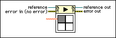

Start Asynchronous Call Node
Owning Palette: Application Control VIs and Functions
Requires: Base Development System
Starts an asynchronous call to the VI indicated by the reference input. Depending on how you prepare reference for asynchronous execution with the Open VI Reference function, you can either ignore the VI after calling it or collect its outputs at a later time with the Wait On Asynchronous Call node.

 Add to the block diagram Add to the block diagram |
 Find on the palette Find on the palette |